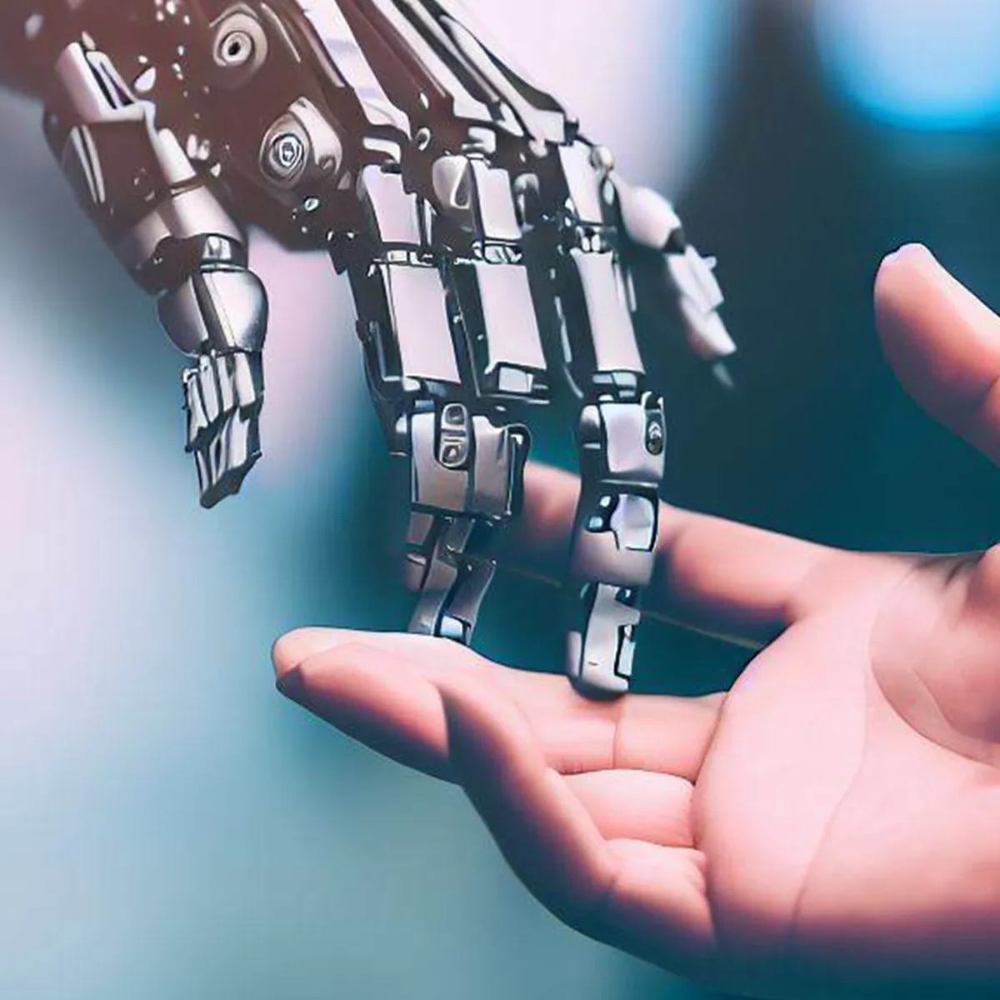

AI(ARTIFICIAL INTELLIGENCE)
Breif
Artificial Intelligence (AI) is a branch of computer science that focuses on creating intelligent machines that can perform tasks that would normally require human intelligence. AI systems are designed to learn from experience, adapt to new information, and make decisions based on data. There are several different approaches to AI, including rule-based systems, machine learning, and deep learning. AI is used in a wide variety of applications, from virtual personal assistants like Siri and Alexa to autonomous vehicles and robots. AI has the potential to revolutionize many industries and change the way we live and work in the future.
To Know More about AI click the link below----
Click here
BlockChain

Breif
Blockchain is a distributed digital ledger technology that allows for secure and transparent recording of transactions without the need for a central authority. It was first introduced in 2008 as the underlying technology behind Bitcoin,the first decentralized cryptocurrency. In a blockchain network,each participanthas a copy of the ledger that contains all the transaction records. Transactions are verified by a network of nodes through a consensus mechanism, which ensures the integrity and immutability of the ledger. Once a transaction is recorded in a block, it cannot be altered or deleted without the consensus of the network. This feature makes blockchain technology ideal for applications that require transparency, security, and trust, such as financial services, supply chain management, and voting systems. Some of the key advantages of blockchain technology include decentralization, immutability, transparency, and security. However, it also has some challenges such as scalability and energy consumption.
To Know More about BlockChain click the link below----
Click here
Difference between AI and BLOCKCHAIN
- Artificial Intelligence (AI) and blockchain technology are two of the most innovative technologies that have emerged in the last decade. AI enables machines to assist humans and make decisions, while blockchain technology is a distributed ledger that allows for secure, transparent and tamper-proof applications
- Blockchain has many issues related to security, scalability and efficiency. AI has issues of its own such as explainability, trustworthiness, and privacy. Now, if these two technologies are used together, it would create the next digital generation.
- Blockchain can enable decentralized marketplaces and coordination platforms that can be used for many components of Artificial Intelligence, that includes computing power data and algorithms. These will parent many other innovations and usage of AI to a greater level.
Conclusion
Despite faster development, involving both AI and blockchain have a long road of development. With AI, the advanced most recent development is Google Duplex, which involves automating phone calls and making required tasks on behalf of the users. But there is a limitation which can be used only for achieving three main functions: holiday hours, restaurant reservation and hair salon appointments.
Yes, there are many advancements involving algorithms which make use of greater amounts of machine computing power and training data, while keeping up with the complexities of the real world is quite difficult.